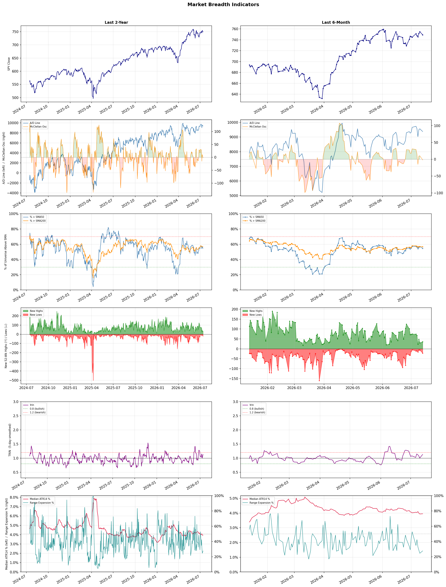

A daily market breadth and sector rotation report for active investors
| Item | Read |
|---|---|
| Regime | Selective Risk-On |
| Risk posture | Selective |
| Universe | 1,340 stocks tracked · 36 new 52-week highs · 30 active swing setups |
| Breadth | 54.6% of tracked stocks are above SMA50 — neutral range, new highs exceed new lows (36 vs 22), McClellan oscillator (breadth momentum) is negative at -1.9 |
| Leadership | Insurance - Property & Casualty, Diagnostics & Research, and Medical Care Facilities |
| Weakest groups | Other Industrial Metals & Mining, Utilities - Renewable, and Aerospace & Defense |
Use this report to prioritize research and chart review; validate entries, stops, liquidity, earnings, and risk before acting.
| Item | Read |
|---|---|
| Primary read | Selective Risk-On regime with Selective risk posture. |
| Research queue | PRCH, ALL, PGR, TRV, LMND |
| Leadership focus | Insurance - Property & Casualty, Diagnostics & Research, and Medical Care Facilities |
| Caution list | Other Industrial Metals & Mining, Utilities - Renewable, and Aerospace & Defense |
| Review prompt | Check extension risk, chart location, fundamentals, valuation, and earnings before using any research row. |
| Item | Read |
|---|---|
| Primary read | 2 active risk warnings; use screen output as watchlist input only. |
| Bullish screens | ALL, WRB, TDOC, CVS, STGW |
| Bearish screens | ORCL, CPRT, EOSE, NFGC, ACHR |
| Alerts / levels | Automated trigger, stop, ATR, liquidity, reward/risk, and event-risk levels are pending future enrichment. |
| Review prompt | Open the linked chart, define trigger and invalidation, then check liquidity and event risk independently. |
Risk Posture: Selective — screen backdrop supports selective research in leading industries
Metric context: McClellan below -50 = elevated selling pressure; below -100 = washout territory. Range Expansion = share of stocks with daily range above their 20-day average. Signal Density = share of tracked names appearing in signal screens.
| Breadth Date | % > SMA50 | % > SMA200 | New Highs | New Lows | McClellan | Median Range | Avg Range | Median ATR14 | Range Expansion | Signal Density |
|---|---|---|---|---|---|---|---|---|---|---|
| 2026-07-13 | 54.6% | 56.7% | 36 | 22 | -1.9 | 3.2% | 3.7% | 4.0% | 27.7% | 2.5% |

Prior comparison date: July 10, 2026
| Metric | Prior | Current | Change |
|---|---|---|---|
| Regime | Selective Risk-On | Selective Risk-On | unchanged |
| Risk Posture | Selective | Selective | unchanged |
| % > SMA50 | 56.8% | 54.6% | -2.2 pts |
| % > SMA200 | 56.9% | 56.7% | -0.2 pts |
| New Highs | 29 | 36 | +7 |
| New Lows | 6 | 22 | -16 |
Top-10 industries entering: Healthcare Plans. Top-10 industries leaving: REIT - Hotel & Motel. New multi-signal long setups: ALL, BNS, CVS, D, ES, ITW, KO, MET. New multi-signal short setups: ACHR, EOSE.
| Status | Tickers | Read |
|---|---|---|
| Added | ACHR, ALHC, ALL, BNS, CVS, D, DHR, EOSE | New technical screen matches vs prior report. |
| Removed | ABCL, AGNC, APLE, AVTX, CROX, CRSR, EQT, ETSY | No longer present in today's technical screen matches. |
| Still Active | CPRT, MFG, MUFG, NUVL, OMC, RF, SMFG, STGW | Appeared in both current and prior reports. |
| Promoted | OMC, WRB | Model Screen Score improved by at least 15 points. |
| Downgraded | none | Model Screen Score declined by at least 15 points. |
| Direction | Industry | ETF | Prior Rank | Current Rank | Days | Rank Change |
|---|---|---|---|---|---|---|
| Rose | Insurance - Property & Casualty | KIE | 80 | 1 | 42 | +79 |
| Rose | Oil & Gas Refining & Marketing | CRAK | 82 | 4 | 28 | +78 |
| Rose | Household & Personal Products | XLP | 91 | 18 | 35 | +73 |
| Rose | Insurance Brokers | N/A | 81 | 11 | 28 | +70 |
| Rose | Utilities - Regulated Electric | XLU | 96 | 31 | 42 | +65 |
Bull: The rising relative strength of the Property & Casualty insurance sector, as highlighted in recent headlines, can be attributed to several macroeconomic factors, including the industry's ongoing digitalization and growth in exposure, which enhance operational efficiency and profitability. Additionally, the positive sentiment reflected in articles discussing strong earnings reports from key players like Assured Guaranty and Skyward Specialty Insurance suggests robust financial performance, further bolstering investor confidence in the sector. This combination of technological advancement and strong earnings momentum positions the State Street SPDR S&P Insurance ETF (KIE) favorably in the current market environment.
Bear: While the rising relative strength of the Property & Casualty insurance sector may seem promising, it is crucial to consider the potential headwinds that could undermine this bullish outlook. The industry's reliance on digitalization could expose companies to cybersecurity risks and increased competition from insurtech startups, which may erode profit margins. Furthermore, ongoing economic uncertainties, such as inflation and potential recessionary pressures, could lead to higher claims costs and reduced consumer spending on insurance products, ultimately impacting the financial performance of firms within the State Street SPDR S&P Insurance ETF (KIE).
Verdict: The Property & Casualty insurance sector is experiencing rising strength primarily due to ongoing digitalization and strong earnings reports from major players, which enhance operational efficiency and investor confidence. However, a key risk lies in the potential for increased cybersecurity threats and competition from insurtech startups, alongside economic uncertainties that could elevate claims costs and dampen consumer spending. Investors should monitor these risks closely while considering exposure to the sector through the State Street SPDR S&P Insurance ETF (KIE).
Sources: Yahoo Finance, Google News
Bull: The Oil & Gas Refining & Marketing sector is experiencing a rise in relative strength primarily due to improving market sentiment amid hopes of de-escalation in the Middle East, which could stabilize oil supply and enhance refinery margins. Additionally, the recent performance of ETFs like CRAK hitting new 52-week highs, along with specific stock rallies such as Par Pacific Holdings jumping 8.2%, indicates strong investor confidence and a sector-wide recovery, suggesting that energy is regaining its appeal as a viable investment opportunity.
Bear: While the recent rise in the Oil & Gas Refining & Marketing sector, exemplified by ETFs like CRAK hitting new 52-week highs, may reflect short-term market optimism, it is crucial to consider the underlying demand concerns that persist. Factors such as potential economic slowdowns, shifts towards renewable energy, and ongoing geopolitical tensions could lead to volatility in oil prices and refinery margins, undermining the sustainability of this rally. Additionally, the sector's reliance on a fragile geopolitical landscape for stability raises significant risks that could dampen investor confidence in the long term.
Verdict: The Oil & Gas Refining & Marketing sector's recent rise is fundamentally driven by improving market sentiment linked to hopes for de-escalation in the Middle East, which could stabilize oil supply and enhance refinery margins. However, investors should remain cautious of the key risk posed by potential economic slowdowns and ongoing geopolitical tensions, which could lead to volatility in oil prices and undermine the sustainability of the current rally. It is advisable to monitor macroeconomic indicators and geopolitical developments closely before making investment decisions in this sector.
Sources: Yahoo Finance, Google News
Bull: The Household & Personal Products sector is likely experiencing rising relative strength due to its resilience amidst mixed consumer stock performance, as highlighted in the recent sector updates. Additionally, the potential for a Fed rate hike, which could increase borrowing costs, may drive investors toward stable, dividend-paying stocks like Procter & Gamble and Kimberly-Clark, which are seen as safe havens in uncertain economic conditions. This trend is further supported by the positive sentiment surrounding dividend growth, as indicated by the mention of a "Dividend King" stock expected to outperform broader indices.
Bear: While the Household & Personal Products sector may exhibit rising relative strength, this could be misleading as it often reflects defensive positioning rather than genuine growth potential. The mixed performance of consumer stocks suggests underlying economic uncertainty, and if inflation persists or a Fed rate hike occurs, consumers may cut back on discretionary spending, impacting sales for companies like Procter & Gamble and Kimberly-Clark. Furthermore, the reliance on dividend growth in a potentially slowing economy may not be enough to offset the risks associated with rising input costs and supply chain disruptions, which could pressure profit margins and ultimately lead to underperformance in this sector.
Verdict: The Household & Personal Products sector is gaining relative strength as investors seek stability in dividend-paying stocks amid economic uncertainty, particularly with the potential for a Fed rate hike. However, the key risk lies in the possibility of persistent inflation and its impact on consumer discretionary spending, which could negatively affect sales and profit margins for major players like Procter & Gamble and Kimberly-Clark. Investors should closely monitor economic indicators and consumer sentiment to gauge the sustainability of this trend.
Sources: Yahoo Finance, Google News
Bull: The relative strength of the Insurance Brokers industry is likely bolstered by strong earnings reports, such as Ryan Specialty's impressive Q1 performance, which reflects robust demand and operational efficiency. Additionally, the ongoing trend of mergers and acquisitions, highlighted in Yahoo Finance, suggests consolidation in the sector that can enhance competitive positioning and profitability, countering fears of disruption from AI technologies as noted in Bloomberg and Barron's. This combination of solid earnings and strategic industry consolidation positions insurance brokers favorably despite broader market concerns.
Bear: While strong earnings reports like Ryan Specialty's may appear positive, they could be masking underlying vulnerabilities in the insurance brokerage sector, particularly as AI technologies threaten to disrupt traditional business models and reduce margins. Additionally, the recent decline in broker stocks from five-year highs and the compression of multiples indicate that the market is already pricing in potential challenges, suggesting that the optimism around M&A activity may not be sufficient to offset the looming risks associated with technological disruption and changing consumer preferences.
Verdict: The Insurance Brokers industry is likely experiencing a rise due to strong earnings reports and strategic consolidation through mergers and acquisitions, which enhance competitive positioning and profitability. However, a key risk lies in the potential disruption from AI technologies that could undermine traditional business models and margins, signaling that investors should remain cautious and monitor technological advancements closely.
Sources: Google News
Bull: The Utilities - Regulated Electric sector, as represented by the XLU ETF, is experiencing a rise in relative strength primarily due to its stability during market volatility, as highlighted by the headline "When The Market Dropped, XLU ETF Held Its Ground." Additionally, the sector is poised to benefit from the ongoing AI boom, with reports suggesting that it could be one of the biggest winners, especially as demand for energy increases from data centers and tech advancements. This combination of defensive characteristics and growth potential positions utilities favorably amidst a shifting market landscape.
Bear: While the XLU ETF has demonstrated resilience during recent market volatility, this stability often comes at the cost of growth potential, particularly in a rising interest rate environment where utility stocks typically underperform due to their high capital expenditures and reliance on debt. Moreover, the bullish narrative surrounding AI's impact on the sector overlooks the significant regulatory and operational challenges utilities face in scaling their infrastructure to meet increased demand, which could hinder their ability to capitalize on any perceived growth opportunities. As tech stocks gain favor over utilities, the sector may struggle to attract investment, especially if interest rates remain elevated and economic growth slows.
Verdict: The Utilities - Regulated Electric sector is rising due to its defensive characteristics, which provide stability during market volatility, coupled with potential growth from increased energy demand driven by the AI boom. However, the key risk lies in the rising interest rate environment, which could hinder the sector's growth potential due to high capital expenditures and reliance on debt, making it crucial for investors to monitor interest rate trends and regulatory challenges that may impact infrastructure scaling.
Sources: Yahoo Finance, Google News
| Direction | Industry | ETF | Prior Rank | Current Rank | Days | Rank Change |
|---|---|---|---|---|---|---|
| Fell | Copper | COPX | 8 | 82 | 42 | -74 |
| Fell | Aerospace & Defense | ITA | 14 | 86 | 42 | -72 |
| Fell | Solar | TAN | 4 | 75 | 42 | -71 |
| Fell | Steel | SLX | 7 | 77 | 42 | -70 |
| Fell | Other Industrial Metals & Mining | N/A | 19 | 88 | 42 | -69 |
Bear: While the bull analyst attributes the relative strength decline of copper (COPX) to concerns over global manufacturing and competitive dynamics, it is essential to recognize that the broader macroeconomic environment poses significant headwinds for copper prices. With rising interest rates and potential recessionary pressures, demand for copper—especially in construction and manufacturing—could weaken further, exacerbating the ETF's performance issues. Additionally, the narrative around copper as a critical component for electrification may be overstated, as alternative materials and technologies could emerge, undermining long-term demand projections for copper.
Bull: The recent relative strength decline of copper (COPX) against other industries can largely be attributed to concerns over global manufacturing slowing down, as highlighted in the headline "If Global Manufacturing Weakens, Here’s What Happens to This Copper ETF." Additionally, the competitive landscape is shifting, with discussions around whether copper miners or futures (as seen in the COPX vs. CPER debate) are better positioned to capitalize on electrification trends, suggesting uncertainty in investor sentiment towards copper equities. This, combined with the pressure from broader economic factors, has contributed to copper's relative weakness.
Verdict: The recent decline in copper prices is primarily driven by concerns over a slowdown in global manufacturing and the impact of rising interest rates, which could dampen demand in key sectors like construction. The bear case highlights a significant risk that alternative materials may reduce long-term copper demand, suggesting investors should remain cautious and consider diversifying away from copper equities until clearer signs of demand stabilization emerge.
Sources: Yahoo Finance, Google News
Bear: While the long-term bullish sentiment around increased government spending on defense is noteworthy, the immediate market dynamics suggest that the sector is grappling with significant headwinds, including rising interest rates and inflationary pressures that could erode profit margins. Additionally, the mixed performance of key players like Mercury Systems indicates that not all companies will benefit equally from this spending wave, and potential earnings disappointments could lead to further declines in stock prices. The reliance on geopolitical tensions to drive stock performance may also prove unsustainable if conflicts do not escalate as anticipated, leaving investors vulnerable to a correction in overvalued defense stocks.
Bull: The Aerospace & Defense sector is experiencing a decline in relative strength primarily due to short-term market reactions to geopolitical tensions, as highlighted by the mixed performance of defense stocks amid the ongoing Iran conflict and the recent drop in Mercury Systems' stock. While there is a significant long-term bullish sentiment driven by increased government spending on defense and NATO's commitment to allocate 5% of GDP to defense by 2035, the immediate market sentiment appears to be overshadowed by earnings concerns and sector-wide selling pressures, as noted in the Barron's article. However, this presents a compelling buying opportunity as the sector is poised for a multi-year spending wave, indicating strong fundamentals that could drive future growth.
Verdict: The Aerospace & Defense sector is currently experiencing a decline primarily due to short-term market reactions to geopolitical tensions, rising interest rates, and inflationary pressures, which are eroding profit margins and creating earnings concerns. While the long-term outlook remains bullish with increased government spending on defense, investors should be cautious of potential earnings disappointments and the risk of a correction in overvalued stocks if geopolitical conflicts do not escalate as expected. It may be prudent to adopt a selective investment approach, focusing on companies with strong fundamentals and resilient business models.
Sources: Yahoo Finance, Google News
Bear: While the solar sector has seen some positive upgrades and individual stock rallies, the overall trend for the TAN ETF suggests a more profound issue. The substantial rally of 82% may have led to overvaluation concerns, and the mention of a "quiet $3,350 tax" indicates that the long-term financial implications of regulatory changes are beginning to weigh on investor sentiment. Additionally, the mixed performance of major players, coupled with the recent selling of TAN, signals that the market may be losing confidence in the sustainability of growth in the solar industry, particularly as competition intensifies and profit margins face pressure.
Bull: The solar industry, represented by the TAN ETF, is experiencing a decline in relative strength primarily due to investor concerns over regulatory changes and tax implications, as highlighted by the mention of a "quiet $3,350 tax on $50,000 over a decade." Additionally, despite positive upgrades and bullish notes from analysts for individual stocks like First Solar and Enphase, the overall market sentiment appears cautious, as indicated by headlines about selling TAN and losses in major solar stocks like Applied Materials. This combination of regulatory uncertainty and mixed stock performance is contributing to the relative weakness of the solar sector compared to other industries.
Verdict: The solar industry's recent decline, as reflected in the TAN ETF, is primarily driven by investor anxiety over regulatory changes and potential tax implications, which could significantly impact long-term profitability. The bear case highlights a critical risk of overvaluation following a substantial rally, suggesting that if investor confidence continues to wane amid increasing competition and pressure on profit margins, further declines in stock prices could ensue. Investors should closely monitor regulatory developments and market sentiment to assess the sustainability of growth in the solar sector.
Sources: Yahoo Finance, Google News
Bear: While the bull analyst points to potential catalysts like AI-driven demand and favorable government policies, these factors may not be sufficient to offset the underlying issues plaguing the steel industry. The persistent relative strength decline suggests that the market is skeptical about the sustainability of demand, especially given the looming threats of overcapacity and economic headwinds that could dampen consumption. Additionally, the recent headlines indicating that steel stocks are underperforming relative to other sectors highlight a lack of investor confidence, which could signal deeper structural problems in the industry that are not easily resolved by short-term catalysts.
Bull: The steel industry is experiencing a relative strength decline primarily due to broader market dynamics and competitive pressures, as indicated by the headlines discussing steel stocks underperforming compared to other sectors. Factors such as fluctuating demand driven by macroeconomic uncertainties and potential overcapacity in production are likely contributing to this trend. However, the recent headlines also highlight significant catalysts, such as AI-driven demand and favorable government policies, which could bolster the steel sector's long-term growth prospects, suggesting that the current relative weakness may be temporary.
Verdict: The steel industry's recent decline can be fundamentally attributed to a combination of macroeconomic uncertainties, fluctuating demand, and concerns over overcapacity, leading to underperformance relative to other sectors. While potential catalysts like AI-driven demand and favorable government policies offer some hope for recovery, the key risk remains the market's skepticism about the sustainability of demand and investor confidence, which could hinder any meaningful rebound. Investors should closely monitor economic indicators and capacity trends before making significant commitments to steel stocks.
Sources: Yahoo Finance, Google News
Bear: While the bull analyst highlights emerging technologies and selective stock interest as positive indicators, the reality is that the Other Industrial Metals & Mining sector is facing significant headwinds, including declining demand from key industries and increasing operational costs. Additionally, the shift towards AI and innovative practices may not benefit traditional players, which could lead to further erosion of market share and profitability in a sector that is already struggling with falling relative strength and investor confidence. This suggests that the broader sector may continue to underperform, overshadowed by more agile competitors.
Bull: The falling relative strength of the Other Industrial Metals & Mining sector may be attributed to a combination of market sentiment and competitive pressures highlighted in recent headlines. The focus on emerging technologies, such as AI in mining, as noted by the Boston Consulting Group, suggests a shift towards more innovative and efficient players, potentially sidelining traditional companies. Additionally, the mention of top stock picks in the red-hot metals sector by BofA indicates that investor interest may be gravitating towards specific stocks or segments within the broader metals market, rather than the Other Industrial Metals & Mining category as a whole.
Verdict: The Other Industrial Metals & Mining sector is likely experiencing a decline due to a combination of diminishing demand from core industries and rising operational costs, which are eroding profitability. The key risk is that traditional players may struggle to adapt to the rapid technological advancements and competitive pressures from more innovative companies, potentially leading to further market share losses and investor disinterest. Investors should closely monitor industry trends and consider reallocating funds to more agile players or sectors that are better positioned for growth.
Sources: Google News
| Industry | Rank | ETF | 7d | 14d | 28d | 42d | Chg 42d | Size | 20D | 60D | Composite | Active Setups |
|---|---|---|---|---|---|---|---|---|---|---|---|---|
| Insurance - Property & Casualty | 1 | KIE | 5 | 9 | 42 | 80 | +79 | 8 | 16.8% | 19.7% | 0.923 | 1 |
| Diagnostics & Research | 2 | N/A | 4 | 4 | 10 | 20 | +18 | 16 | 14.8% | 32.1% | 0.908 | 1 |
| Medical Care Facilities | 3 | IHF | 7 | 8 | 46 | 50 | +47 | 9 | 15.7% | 25.2% | 0.907 | 0 |
| Oil & Gas Refining & Marketing | 4 | CRAK | 30 | 46 | 82 | 53 | +49 | 7 | 19.3% | 19.0% | 0.902 | 0 |
| Health Information Services | 5 | N/A | 6 | 11 | 15 | 21 | +16 | 12 | 19.8% | 31.2% | 0.897 | 0 |
| Healthcare Plans | 6 | IHF | 1 | 1 | 5 | 13 | +7 | 10 | 6.7% | 61.1% | 0.896 | 1 |
| Advertising Agencies | 7 | N/A | 9 | 14 | 11 | 34 | +27 | 7 | 11.5% | 42.6% | 0.893 | 1 |
| Airlines | 8 | N/A | 2 | 3 | 6 | 16 | +8 | 8 | 7.6% | 21.7% | 0.878 | 1 |
| Biotechnology | 9 | XBI | 3 | 7 | 36 | 28 | +19 | 93 | 16.9% | 20.0% | 0.867 | 1 |
| Banks - Diversified | 10 | N/A | 10 | 13 | 12 | 22 | +12 | 16 | 7.3% | 13.2% | 0.866 | 0 |
Rank columns (7d–42d) show the industry's rank that many trading days ago — lower is stronger. Chg 42d = rank change vs 42 trading days ago — positive means the industry moved up. 20D and 60D are the mean stock return within the industry over that period. Active Setups: count of today's swing-trade candidates from this industry appearing across all signal screens.
| Industry | Rank | ETF | 7d | 14d | 28d | 42d | Chg 42d | Size | 20D | 60D | Composite | Active Setups |
|---|---|---|---|---|---|---|---|---|---|---|---|---|
| Other Industrial Metals & Mining | 88 | N/A | 83 | 79 | 50 | 19 | -69 | 21 | -18.0% | -20.6% | 0.062 | 0 |
| Utilities - Renewable | 87 | N/A | 76 | 55 | 62 | N/A | N/A | 7 | -16.6% | -10.7% | 0.090 | 0 |
| Aerospace & Defense | 86 | ITA | 70 | 78 | 54 | 14 | -72 | 26 | -19.2% | -19.2% | 0.101 | 0 |
| Gold | 85 | GDX | 87 | 88 | 83 | 71 | -14 | 27 | -6.8% | -26.6% | 0.102 | 0 |
| Uranium | 84 | URA | 88 | 87 | 84 | 93 | +9 | 6 | -8.8% | -27.5% | 0.107 | 0 |
| Chemicals | 83 | N/A | 86 | 85 | 69 | 66 | -17 | 8 | -14.1% | -18.7% | 0.128 | 0 |
| Copper | 82 | COPX | 85 | 82 | 19 | 8 | -74 | 6 | -10.4% | -16.6% | 0.141 | 0 |
| Auto Manufacturers | 81 | N/A | 69 | 81 | 85 | 35 | -46 | 10 | -3.8% | -12.0% | 0.237 | 0 |
| Specialty Industrial Machinery | 80 | N/A | 73 | 69 | 75 | 55 | -25 | 21 | -5.0% | -13.9% | 0.238 | 1 |
| Telecom Services | 79 | N/A | 77 | 76 | 66 | 57 | -22 | 19 | -6.4% | -10.0% | 0.239 | 0 |
Rank columns (7d–42d) show the industry's rank that many trading days ago — lower is stronger. Chg 42d = rank change vs 42 trading days ago — positive means the industry moved up. 20D and 60D are the mean stock return within the industry over that period. Active Setups: count of today's swing-trade candidates from this industry appearing across all signal screens.
These are research candidates from top-ranked stocks, capped at five names per industry to avoid over-concentration. Returns shown (60D, 120D, 250D) are historical — they reflect where prices have already moved, not forward expectations. Extension Risk flags names that may require extra patience or a better entry point. They are not buy signals.
Chart: TV = TradingView chart (opens in browser); PDF = local chart file (if downloaded).
| Ticker | Name | Industry | Industry Rank | Market Cap | 60D Hist | 120D Hist | 250D Hist | Extension Risk | Research Reason | Chart |
|---|---|---|---|---|---|---|---|---|---|---|
| PRCH | Porch Group | Insurance - Property & Casualty | 1 | N/A | 80.2% | 58.1% | 8.3% | Extended | Top-ranked in industry; extended | TV |
| ALL | Allstate | Insurance - Property & Casualty | 1 | N/A | 17.5% | 33.4% | 30.7% | Constructive | Top-ranked in industry | TV |
| PGR | Progressive | Insurance - Property & Casualty | 1 | N/A | 16.5% | 15.9% | -5.2% | Constructive | Top-ranked in industry | TV |
| TRV | The Travelers Companies | Insurance - Property & Casualty | 1 | N/A | 14.1% | 26.8% | 33.7% | Constructive | Top-ranked in industry | TV |
| LMND | Lemonade | Insurance - Property & Casualty | 1 | N/A | 7.2% | -11.1% | 75.4% | Constructive | Top-ranked in industry | TV |
| PSNL | Personalis | Diagnostics & Research | 2 | N/A | 126.8% | 52.1% | 132.5% | Very extended | Top-ranked in industry; very extended | TV |
| GH | Guardant Health | Diagnostics & Research | 2 | N/A | 86.7% | 41.3% | 218.3% | Extended | Top-ranked in industry; extended | TV |
| NEO | NeoGenomics | Diagnostics & Research | 2 | N/A | 62.6% | 10.3% | 96.5% | Extended | Top-ranked in industry; extended | TV |
| TWST | Twist Bioscience | Diagnostics & Research | 2 | N/A | 56.8% | 118.2% | 139.0% | Extended | Top-ranked in industry; extended | TV |
| NTRA | Natera | Diagnostics & Research | 2 | N/A | 31.7% | 18.0% | 72.5% | Constructive | Top-ranked in industry | TV |
| CMPS | COMPASS Pathways | Medical Care Facilities | 3 | N/A | 121.2% | 79.4% | 255.4% | Very extended | Top-ranked in industry; very extended | TV |
| LFST | LifeStance Health | Medical Care Facilities | 3 | N/A | 66.1% | 50.1% | 138.1% | Extended | Top-ranked in industry; extended | TV |
| AVAH | Aveanna Healthcare | Medical Care Facilities | 3 | N/A | 43.9% | 4.9% | 137.6% | Constructive | Top-ranked in industry | TV |
| ACHC | Acadia Healthcare | Medical Care Facilities | 3 | N/A | 14.8% | 161.6% | 26.9% | Extended | Top-ranked in industry; extended | TV |
| THC | Tenet Healthcare | Medical Care Facilities | 3 | N/A | 0.6% | -1.0% | 9.6% | Constructive | Top-ranked in industry | TV |
| PBF | PBF Energy | Oil & Gas Refining & Marketing | 4 | N/A | 41.7% | 94.5% | 113.0% | Constructive | Top-ranked in industry | TV |
| DINO | HF Sinclair | Oil & Gas Refining & Marketing | 4 | N/A | 40.2% | 68.0% | 84.8% | Constructive | Top-ranked in industry | TV |
| VLO | Valero Energy | Oil & Gas Refining & Marketing | 4 | N/A | 25.9% | 61.2% | 98.7% | Constructive | Top-ranked in industry | TV |
| UGP | Ultrapar Participacoes | Oil & Gas Refining & Marketing | 4 | N/A | -1.5% | 46.3% | 99.3% | Lagging | Top-ranked in industry; lagging | TV |
| CSAN | Cosan | Oil & Gas Refining & Marketing | 4 | N/A | -29.3% | -20.5% | -31.7% | Lagging | Top-ranked in industry; lagging | TV |
These are technical screen matches from existing signal files. They are not trade recommendations. Trigger, stop, ATR, liquidity, reward/risk, and event risk still require separate validation until those inputs are available.
Model Screen Score is weighted by signal count, industry rank, freshness, and setup type. It is not a probability of profit, expected return, or suitability rating. Industry cap: max 3 candidates per industry.
Signal glossary: Momentum Pullback = stock in an uptrend that has pulled back 10–30% and shows re-entry conditions. MA Compression = short- and long-term moving averages converging, often preceding a directional move. Three-Day Up/Down = three consecutive closes in the same direction. New 52Wk High/Low = price reached a new annual extreme.
Chart: TV = TradingView chart (opens in browser); PDF = local chart file (if downloaded).
| Ticker | Industry | Setups | Close | Industry Rank | Signal Count | Model Screen Score | Reason | Chart |
|---|---|---|---|---|---|---|---|---|
| ALL | Insurance - Property & Casualty | New 52Wk High; Three-Day Up | 256.45 | 1 | 2 | 100 | Multi-signal; top industry breakout | TV |
| WRB | Insurance - Property & Casualty | MA Compression; Three-Day Up | 73.84 | 1 | 2 | 95 | Multi-signal; top industry setup | TV |
| TDOC | Health Information Services | New 52Wk High; Three-Day Up | 9.65 | 5 | 2 | 93 | Multi-signal; top industry breakout | TV |
| CVS | Healthcare Plans | New 52Wk High; Three-Day Up | 105.90 | 6 | 2 | 93 | Multi-signal; top industry breakout | TV |
| STGW | Advertising Agencies | New 52Wk High; Three-Day Up | 7.87 | 7 | 2 | 93 | Multi-signal; top industry breakout | TV |
| OMC | Advertising Agencies | MA Compression; Three-Day Up | 82.55 | 7 | 2 | 88 | Multi-signal; top industry setup | TV |
| NUVL | Biotechnology | New 52Wk High; Three-Day Up | 123.94 | 9 | 2 | 85 | Multi-signal; top industry breakout | TV |
| BNS | Banks - Diversified | New 52Wk High; Three-Day Up | 88.00 | 10 | 2 | 85 | Multi-signal; top industry breakout | TV |
| MUFG | Banks - Diversified | New 52Wk High; Three-Day Up | 21.94 | 10 | 2 | 85 | Multi-signal; top industry breakout | TV |
| SMFG | Banks - Diversified | New 52Wk High; Three-Day Up | 25.96 | 10 | 2 | 85 | Multi-signal; top industry breakout | TV |
| MET | Insurance - Life | New 52Wk High; Three-Day Up | 93.03 | 12 | 2 | 85 | Multi-signal; new-high strength | TV |
| MFG | Banks - Regional | New 52Wk High; Three-Day Up | 10.49 | 15 | 2 | 85 | Multi-signal; new-high strength | TV |
| RF | Banks - Regional | New 52Wk High; Three-Day Up | 31.07 | 15 | 2 | 85 | Multi-signal; new-high strength | TV |
| RSI | Gambling | New 52Wk High; Three-Day Up | 34.18 | 24 | 2 | 77 | Multi-signal; new-high strength | TV |
| KO | Beverages - Non-Alcoholic | New 52Wk High; Three-Day Up | 84.25 | 25 | 2 | 77 | Multi-signal; new-high strength | TV |
| D | Utilities - Regulated Electric | New 52Wk High; Three-Day Up | 70.80 | 31 | 2 | 70 | Multi-signal; new-high strength | TV |
| ES | Utilities - Regulated Electric | MA Compression; Three-Day Up | 74.86 | 31 | 2 | 65 | Multi-signal; compression setup | TV |
| NGG | Utilities - Regulated Electric | MA Compression; Three-Day Up | 83.28 | 31 | 2 | 65 | Multi-signal; compression setup | TV |
| MU | Semiconductors | Momentum Pullback | 937.00 | 43 | 2 | 50 | Multi-signal; pullback setup | TV |
| ITW | Specialty Industrial Machinery | MA Compression; Three-Day Up | 271.50 | 80 | 2 | 50 | Multi-signal; compression setup | TV |
| TWST | Diagnostics & Research | Momentum Pullback | 90.35 | 2 | 1 | 65 | Single-signal; top industry pullback | TV |
| ORI | Insurance - Property & Casualty | MA Compression | 42.04 | 1 | 1 | 60 | Single-signal; top industry setup | TV |
| ALHC | Healthcare Plans | Momentum Pullback | 20.38 | 6 | 1 | 58 | Single-signal; top industry pullback | TV |
| DHR | Diagnostics & Research | Three-Day Up | 200.16 | 2 | 1 | 55 | Single-signal; top industry setup | TV |
| JBLU | Airlines | Momentum Pullback | 5.60 | 8 | 1 | 50 | Single-signal; top industry pullback | TV |
Bearish setups — stocks making new lows or showing persistent downside patterns. Validate carefully before acting.
| Ticker | Industry | Setups | Close | Industry Rank | Signal Count | Model Screen Score | Reason | Chart |
|---|---|---|---|---|---|---|---|---|
| ORCL | Software - Infrastructure | New 52Wk Low; Three-Day Down | 131.54 | 14 | 2 | 55 | Multi-signal; new-low weakness | TV |
| CPRT | Specialty Business Services | New 52Wk Low; Three-Day Down | 27.44 | 59 | 2 | 35 | Multi-signal; new-low weakness | TV |
| EOSE | Electrical Equipment & Parts | New 52Wk Low; Three-Day Down | 4.35 | 64 | 2 | 25 | Multi-signal; new-low weakness | TV |
| NFGC | Gold | New 52Wk Low; Three-Day Down | 1.43 | 85 | 2 | 15 | Multi-signal; new-low weakness | TV |
| ACHR | Aerospace & Defense | New 52Wk Low; Three-Day Down | 4.55 | 86 | 2 | 15 | Multi-signal; new-low weakness | TV |
How To Use This Report
| Use | Purpose |
|---|---|
| Market map | Start with breadth, regime, risk warnings, and what changed since the prior report. |
| Industry scan | Use leading, deteriorating, rising, and declining industries to focus research. |
| Research queue | Treat long-term candidates as names for deeper fundamental, valuation, and chart review. |
| Technical review | Treat bullish and bearish screen matches as watchlist inputs that require independent trigger, stop, liquidity, and event-risk checks. |
| Source follow-up | Use chart links and source files to verify raw inputs before relying on any row. |
What This Report Is Not
| Not | Meaning |
|---|---|
| Investment advice | The report does not evaluate personal objectives, risk tolerance, tax situation, account type, or suitability. |
| Buy/sell recommendation | Named tickers are research candidates or screen matches, not recommendations to transact. |
| Price target | The report does not provide fair value estimates, targets, or expected returns. |
| Trade plan | Trigger, stop, sizing, reward/risk, liquidity, and event-risk review remain separate user work. |
| Performance claim | Model Screen Score is not validated historical performance or a forecast of future results. |
| Item | Note |
|---|---|
| Version | Daily Report Methodology v1 |
| Model Screen Score | Screen-fit rank based on signal count, industry rank, freshness, and setup type. |
| Not predictive proof | The score is not expected return, probability of profit, historical validation, or suitability analysis. |
| Industry ranks | Composite industry ranks use existing daily ranking outputs and historical rank columns when available. |
| Research candidates | Long-term rows are research candidates from ranked stocks and leading industries, with historical returns labeled as historical only. |
| Technical matches | Bullish and bearish rows are screen matches requiring independent chart, trigger, stop, liquidity, and event-risk review. |
| Source | Status | Rows | Path |
|---|---|---|---|
| Market breadth | present | 1253 | breadth_20260713.csv |
| Industry composite rankings | present | 88 | all_industry_composite_20260713.csv |
| Top ranked stocks | present | 186 | top_ranked_composite_20260713.csv |
| All ranked stocks | present | 1340 | all_stocks_composite_sorted_20260713.csv |
| Top momentum pullbacks | present | 1491 | top_momentum_pullbacks_20260713.csv |
| MA compression | present | 1491 | ma_compression_stocks_20260713.csv |
| Three-day up/down | present | 252 | three_day_up_down_stocks_20260713.csv |
| New 52-week members | present | 58 | breadth_new_52wk_members_20260713.csv |
This report is generated from automated technical screens and is for informational and research purposes only. It is not investment advice, a solicitation, or a recommendation to buy or sell any security. Past performance is not indicative of future results. You are solely responsible for your own investment decisions. Consult a licensed financial advisor before acting on any information herein.